Introduction
Data Preparation
Clustering
LDA
ARM
Naïve Bayes
Decision Tree
SVM
Neural Network
Conclusion
Introduction
On an average, a company allocates approximately 9.1% of its revenue to marketing (source), with a significant portion directed towards campaign planning & content creation (40-50%), paid advertising (20-30%), and the rest on workforce marketing and events. (source). But what is the purpose of investing not only so much money, but also a lot of time and effort, into marketing?
The current market is vast, and regardless of the industry, every company faces thousands of competitors. In such an era, it is crucial to stay ahead and build a good perception among consumers in order to succeed. One of the best ways to understand the importance of brand perception is through McKinsey’s Consumer Decision Journey chart:
This chart clearly shows the decision cycle of a consumer starting from the consideration to brand advocacy. While each state is crucial, the Evaluation and Advocacy stage plays an upper hand:
- Evaluation stage is when consumers research to make an informed decision. Where they collect information from their own, ask friends, read public opinions, etc and make a final decision to engage further or not.
- Advocacy stage is when a consumer gets into the loyalty loop and advocate for the brand’s services/ products.
These 2 stages play an important role in a company’s success, retaining existing customers and gaining new customers as word of mouth is the most powerful source for any customer. Therefore, significant marketing efforts has been put globally to ensure a brand has a loyal set of customers advocating for it.
Now that we know it is important, we can also realize that it is importance of measuring a brand’s perception, right? But the question is how?
In the past, measuring brand perception was challenging and required a lot of manual investigation. However, in today’s digital age, where customers opinions are readily available all over the internet. It is easy to find both sided perspective about a any brand online. So, if one can harness the power of these opinions by building a framework capable of collecting data about a brand across the web, analysing them and providing insights on to the area of improvement, it’d be a success for the company to measure it’s customer perception and tailor their marketing strategies according.
However, it's important to note that most consumers tend to write reviews when they are dissatisfied. Therefore, there’s a high possibility that the data collected from the online sites may not represents both sides equally. Nevertheless, the primary goal remains understanding the customer's point of view and identifying opportunities for improvement, making the skewed data less significant.
Ultimately, this framework can be used to measure:
- Brand's reach based on number of reviews.
- Brand's perception through customer review sentiment.
- Brand's perception across various categories such as quality, customer support, shipping, returns, service, value for money, etc.
- Brand perception shift over time, especially after a major marketing campaign or decision.
Data Collection
Though the goal is to build a dynamic framework capable of analyzing the brand perception of any chosen company. To construct and validate this framework, an initial sample dataset has been compiled from various sources. The chosen sample is a well-recognized ride-hailing service company, "Uber" and the collected data is a combination of customer reviews, recent news articles, and Reddit posts. Find more information regarding the data collection process below.
Source 1: Trustpilot
Trustpilot is a free public review platform featuring diverse reviews from customers. Data from Trustpilot were web scrapped using the Beautiful Soup python library. In addition to customer reviews, the following information were also scrapped from the website to ensure the analysis be presented across multiple dimensions:
- Reviewer Name
- Reviewer Total Reviews
- Location
- Review Star Rating
- Review Title
- Review
- Date
- Review Likes
Find the data collection code here
Download the raw data here
Source 2: NewsAPI
While customer reviews offer a great source to measure brand perception. It is also crucial to keep track of public news, especially the popular ones, to analyse the current pulse of market and potential areas of improvement. Hence, NewsAPI were used to collect recent popular news articles tagged on the company “Uber”. The data were collected on the following topics individually:
- Customer Service
- Safety
- Promotions
- Pricing
API Components:
- 1. Endpoint: https://newsapi.org/v2/everything
- 2. Parameters:
- q: uber%20NOT%20eats%20AND%20[topic]
- language: en
- apiKey: [API KEY]
- sortby: popularity
Find the data collection code here
Download the raw data here
Source 3: Reddit
In addition to customer reviews and news articles, social network contents from Reddit was also collected to monitor the company’s campaigns and promotions- which could potentially influence and shift customers perception. Reddit API were used for this purpose.
API Components:
- 1. Endpoint: https://oauth.reddit.com/r/[subreddit]/new
- 2. Parameters:
- subreddit: Uber
- g: en
- authentication: [AUTHENTICATION TOKEN]
- sortby: popularity

Find the data collection code here
Download the raw data here
Data Preparation
The collected raw data contains a combination of text, categorical and numerical features. However, it cannot be used directly for analysis, especially the text data. Hence, the data has been pre-processed in a was that can be used for modeling. The following are a few data cleaning steps performed on the raw data.
Data Preparation Steps:
- 1. Unique identifier creation:
- Every review was tagged to an unique ID to ensure traceability throughout the analysis.

- 2. Filtering:
- The dataset includes reviews from around the world dating back over 10 years. To focus on recent feedback and ensure relevance, the data is filtered out for the last 3 years from the United States.
- 3. Removed special characters and numbers:
- Along with texts, the reviews were a mix of punctuations, emojis and numbers, which are not required in this use case. Hence, they were removed from the dataset.

- 4. Lemmatization:
- The words were lemmatized to ensure different forms of a same word are treated identically
- 5. Stop words Removal:
- The reviews included words that lacked contextual relevance; hence they were removed from the texts. Along with NLTK’s inbuilt stop words, a few self-defined stop words like “Uber” and “Driver” were also removed.
- 6. TFIDF Vectorization:
- Finally, the words have been vectorized by calculating the frequency and normalizing them.
- Max_df of 0.7 has been applied ensure removal of content specific stop words.
Word Cloud before and after cleaning:
Find the data preprocessing code here
Download the preprocessed data here
Clustering
Clustering is as an unsupervised learning method in machine learning, dividing data based on feature distances. Its goal is to group similar records within clusters (cohesion) while maintaining dissimilarity from objects in other clusters (separation). There are multiple ways to implement clustering however the most popular implementation includes K-Means and Hierarchical Clustering.
K-Means Clustering: This partitioning technique clusters data into a set number of clusters by aggregating the K closest points to a designated point. Various distance metrics (Euclidean, Manhattan, etc.) can be utilized based on the context.

Hierarchical Clustering: This method organizes data hierarchically, constructing dendrogram tree structures. Agglomerative clustering starts with the assumption that each point forms its own cluster, gradually merging them until ideally only one cluster remains. Similar to K-Means, diverse distance metrics and linkage methods are available, chosen according to the specific case.

For this application, both clustering and hierarchical clustering are applied to group similar review based on the frequency of common words.
Data Preparation
Both K-Means and Hierarchical clustering needs numerical data to cluster. Therefore, the document term matrix that was preprepared in the previous section was used. The document term matrix is a review number- document matrix with the values as TFIDF normalized frequencies.
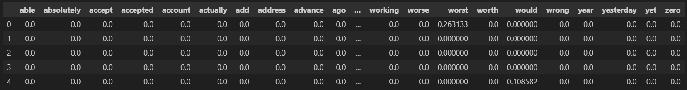
Download the data here
Experiment Setup & Results
Hierarchical Clustering:
- Determining the Optimal Number of Clusters:
- Agglomerative clustering implementation:
The Elbow method and Silhouette method were utilized to identify the optimal cluster count:
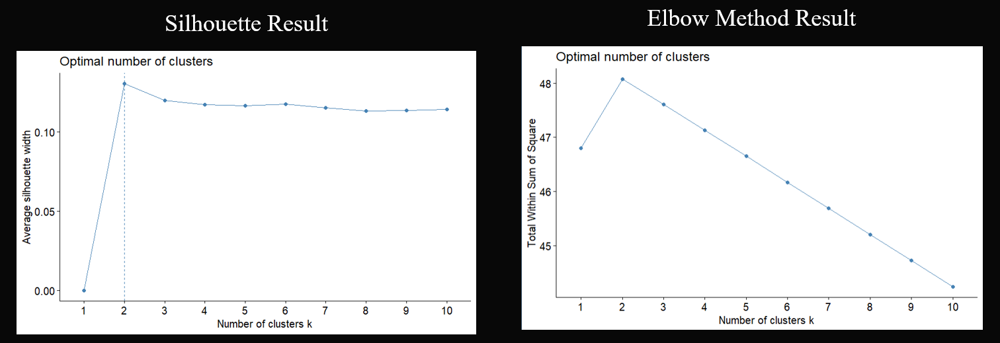
Both methods suggested two clusters as optimal.
Hierarchical clusters were computed using Cosine Similarity distance metric, and Ward linkage method. The dendogram of the result is displayed below:
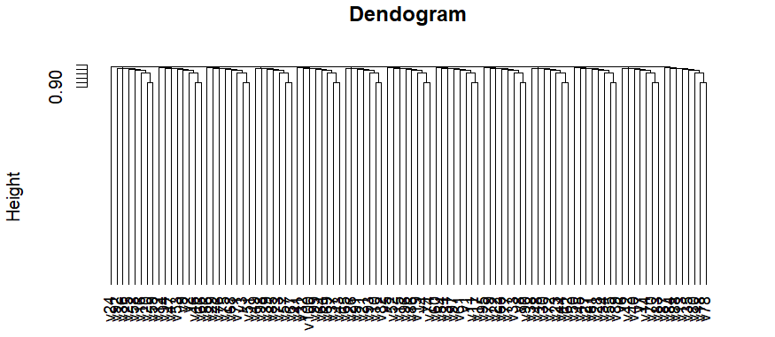
Find the hierarchical clustering R script here
K-Means Clustering:
- Determining the Optimal Number of Clusters:
- K-Means implementation:
Both the Elbow method and Silhouette method were used to find the optimal cluster count.
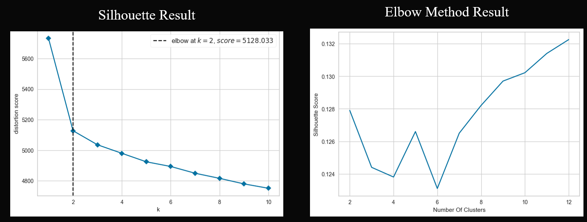
Both methods suggested two number of clusters. However, 3 and 4 clusters were also computed for comparison.
K-Means clustering with 2, 3 and 4 clusters using Euclidean distance was performed and the word clouds of each clusters were computed.
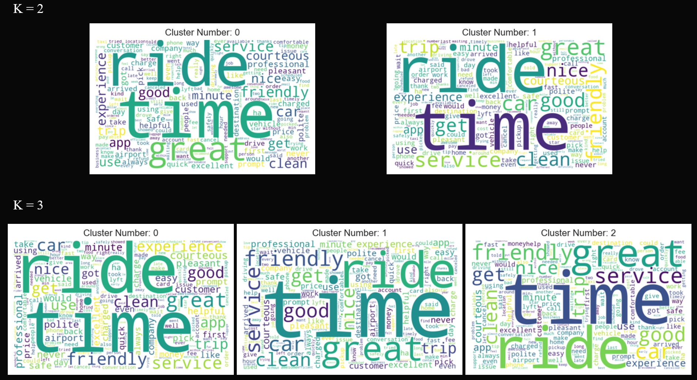
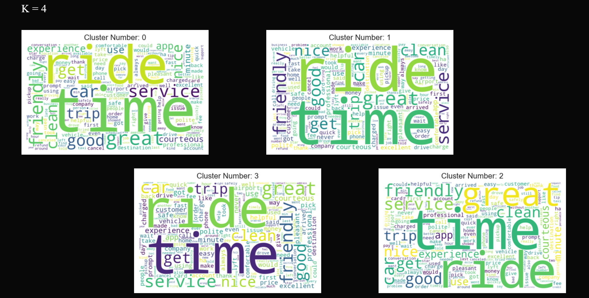
Find the K-Means clustering Python script here
Inference & Conclusion
Both K-Means and Hierarchical clustering have effectively organized the data, displaying a similar distribution across clusters with minimal discrepancies. Almost all clusters have overlapping words due to the high frequency of selected words in the corpus. This is a clear indicator that clustering reviews only based on similar words is insufficient. Hence, a topic modeling alogrithm has been explored in the next section.
Latent Dirichlet Allocation (LDA)
LDA is a topic modeling algorithm that is based on probabilistic modeling. In short, it assumes that each document in a corpus is a mixture of various topics, and each topic is a distribution over words. The goal of LDA is to discover these underlying topics based on the words that appear in the documents. In this project, the aim is to group reviews based on the underlying topics.
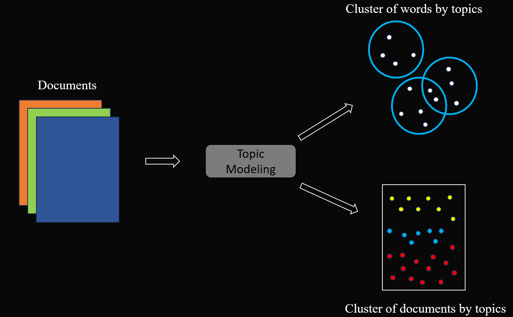
Data Preparation
LDA needs frequency of words data. Therefore, the document term matrix that was preprepared in the previous sections was used. The document term matrix is a review number- document matrix with the values as TFIDF normalized frequencies.
Download the data here
Experiment Setup & Results
LDA for 2, 3, 4 and 5 topics were performed for comparison. The results of each experiment is listed below:
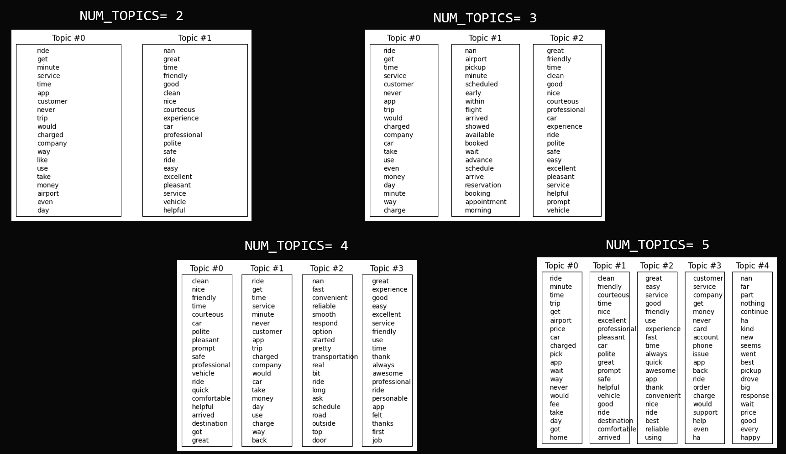Out of the above four topic modelling results, the one with 4 topics seems reasonable. Find the detailed result below:
Find the LDA Python script here
Conclusion
Out of the above four topic modelling results, the one with 4 topics seems reasonable. Find the
Topic 1: Service Quality and Comfort
- This topic may be discussing the quality of service provided by Uber drivers, focusing on aspects like cleanliness of vehicles, friendliness of drivers, professionalism, and overall comfort of the ride experience.
- This topic may be discussing the quality of service provided by Uber drivers, focusing on aspects like cleanliness of vehicles, friendliness of drivers, professionalism, and overall comfort of the ride experience.
- This topic likely discusses feedback on the convenience and reliability of Uber service, including discussions about fast and smooth rides, scheduling options, transportation choices, and experiences outside or on the road.
- This topic likely revolves around positive experiences and appreciation for Uber service, highlighting ease of use, excellent service, friendliness of drivers, and overall satisfaction with the experience.
Next Steps: Alternatelively, a method to achieve topic modeling based on the topic of interest rather than emotions can be explored. For example,
- Sentence 1: "I was happy about the early pickup"
- Sentence 2: "I was happy about how the car was comfortable"
- Sentence 3: "I hated the ride. The ride was discomforting."
Sentence 1 and 2 should not be grouped (because they have same emotion), rather 2 and 3 should be together because they talk about ride quality. This could be achieved by removing the sentiment related words prior to LDA. NLTK's SentimentIntensityAnalyzer could be a good start.
Association Rule Mining
Association Rule Mining (ARM) is an unsupervised machine learning method used to discover patterns and association in a transaction data. The goal is to typically identify relationships between the itemset in the format {Antecedent} -> {Consequent}. ARM is computed using three key measures:
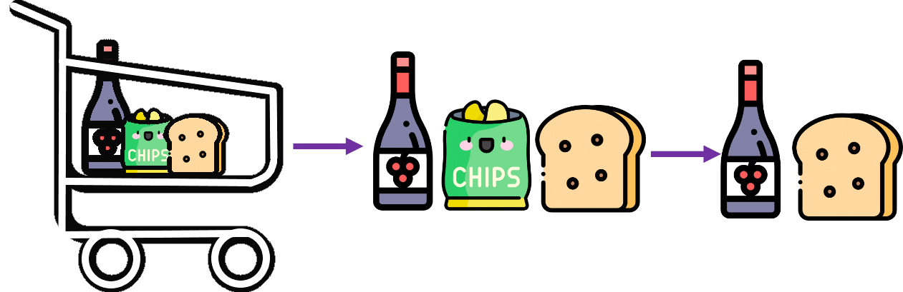
- Support:
- It is the frequency of an item/ itemset occurred in the entire sale. It is more like the prior probability. o Low support signifies that the product is not purchased by sufficient # people to apply association rules.
- Confidence:
- Defines the level of confidence that Consequents will be bought when Antecedent is bought already. It is more like a conditional probability. o Low confidence signifies that consequent is independent of antecedent and no association exist between them.
- Lift:
- Defines how much the probability of buying consequent is lifted when purchased along with antecedent rather just buying them independently. Always, Confidence > Support (Lift > 1) is ideal as it signifies that buying Antecedent lifts the purchase of Consequent. It is conditional probability divided by prior probability.

Apriori stands as a widely utilized association rule mining (ARM) technique rooted in the fundamental principle: "If an itemset is frequent, then all of its subsets must also be frequent." Leveraging this property, ARM efficiently prunes item sets with low support, thereby minimizing the search space. In this project, we're using the Apriori algorithm to find the combination of words that occurs together frequently in the reviews. The goal is to figure out which word's frequency is lifted by other words, giving us insights into customer's perception on each topics.
Data Preparation
Unlike other machine learning algorithms, ARM is used with unlabelled transactional data. Hence, the reviews are preprocessed by removing stop words and lemmatizing them, and converted to basket format.
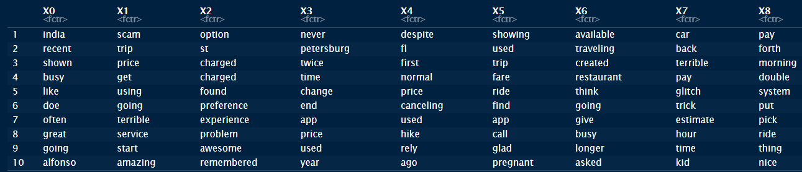
Find the data preparation Python script here
Download the data here
Experiment Setup & Results
Apriori algorithm was used to extract rules from the dataset for the below combinations:
- Minimum Support: 0.3%
- Confidence: 0.5%
The item sets with top 10 support, confidence and lift are displayed below along with it's network representation.
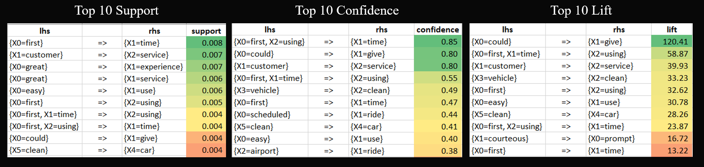
Find the ARM implementation R script here
Conclusion
ARM results are not straight forward and not every rule represents a topic, however it indicates that many customers have written about the cleanliness of the vehicle and customer service.
Naive Bayes Classification
Naive Bayes classifier is a supervised machine learning algorithm used for classification tasks. It is based on the Bayes' theorem describing the probability of a hypothesis given an evidence. Naive Bayes assumes that features are independent of each other given the class label, which is why it's called "naive."
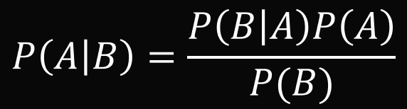
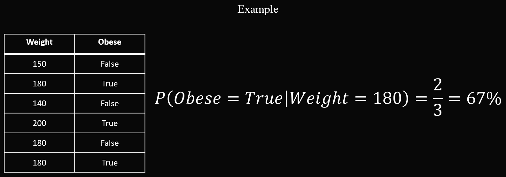
There are two main types of Naive Bayes classifier available:
- Multinomial Naive Bayes: This type is suitable for features that represent counts or frequencies of events. It implements the naive bayes algorithm for multinomially distributed data.
- Bernoulli Naive Bayes: This type is suitable for binary feature variables. It assumes that each feature is binary (0 or 1).
In all Naive Bayes models, smoothing is often applied to prevent zero probabilities. This is to ensure more reliable predictions by adding a small value to observed counts of each feature during training.
Having analyzed the LDA results, we've identified the key themes discussed in each review. Now, our focus shifts to understanding the underlying sentiment or emotion associated with these themes. This crucial step requires the development of a classification model capable of accurately discerning the sentiment expressed in each review.
To achieve this, we've leveraged customers' star ratings in conjunction with their corresponding reviews as the foundational elements for our classification task. Our objective is clear: we aim to construct a robust classification model that effectively predicts the sentiment conveyed within each review, distinguishing between positive and negative sentiments..
Data Preparation
In order to train Naive Bayes algorithms, labeled data is essential. Hence, a new label column called "Sentiment" has been generated. The values in the "Sentiment" column are determined by the star ratings provided. Ratings higher than 3 have been categorized as "Positive," while the remaining ratings are labeled as "Negative."
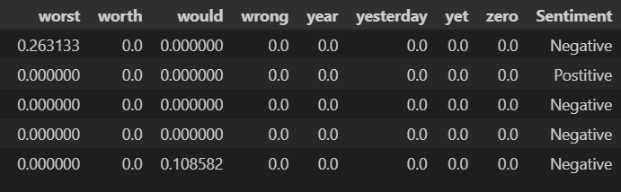
Python is utilized to build the Naive Bayes algorithm, which exclusively accepts data that are partitioned into two disjoint sets: training and test sets. Hence, the dataset has been split at a ratio of 77% to 33%. They need to be disjoint to avoid information from the test set unintentionally influences the training process, which may lead to overfitting and inflates the performance metric.
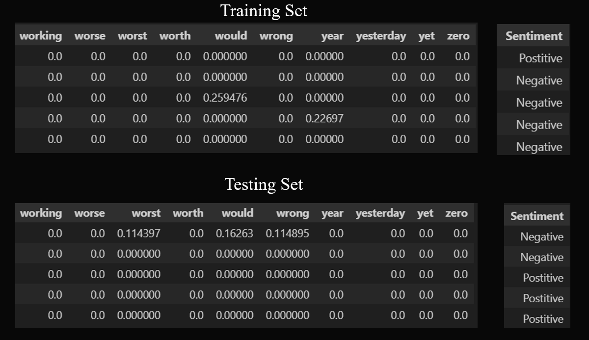
Download the data here
Find the data preparation code here
Experiment Setup & Results
A Multinomial Naive Bayes Classifier was used for classification and yeilding the following results:
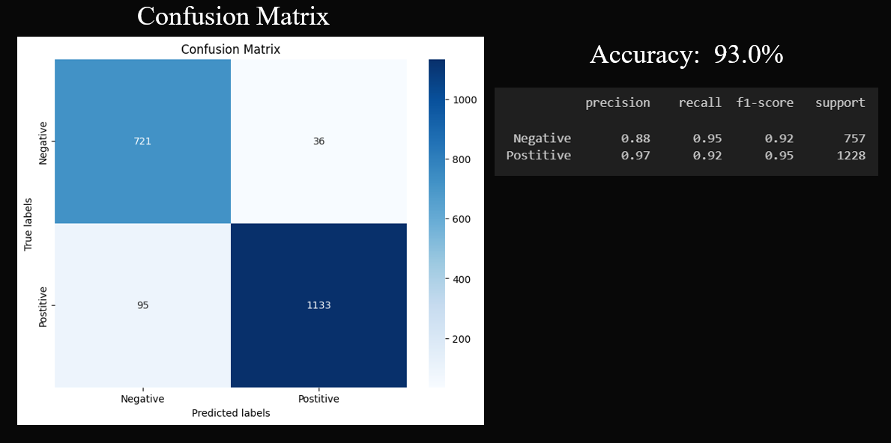
Find the code here
Conclusion
The Naive Bayes classifier exhibited exceptional performance, accurately capturing trends and sentiment words. Achieving an impressive accuracy rate of 93%, this model stands as a reliable tool for accurately classifying the sentiment of future, unknown reviews. However, a few other classification models have been tested in the following sections.
Decision Tree Classification
Decision Tree classifier is a supervised machine learning algorithm used for classification tasks. It constructs a directional tree architecture by partitioning the data at every level and the leaf nodes are assigned a class label.
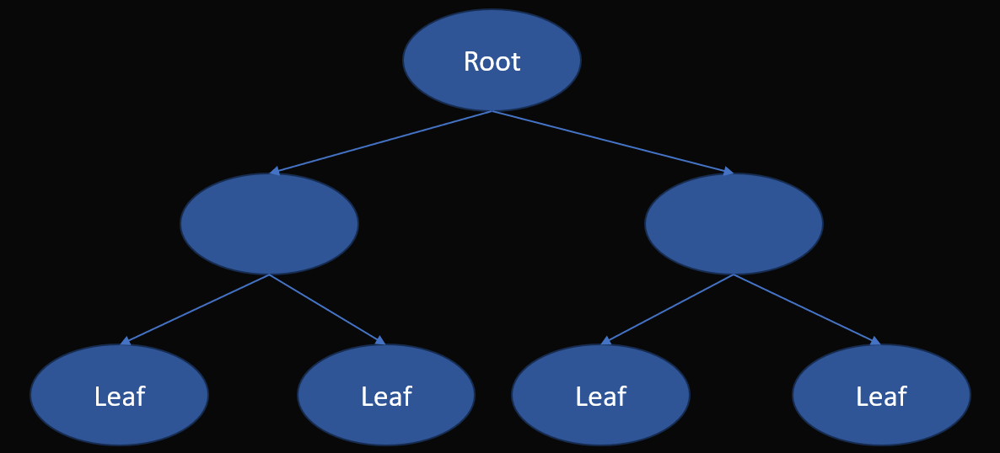
There are infinite number of possible decision trees that can be constructed from a dataset based on the choice of split algorithm and stopping criteria.
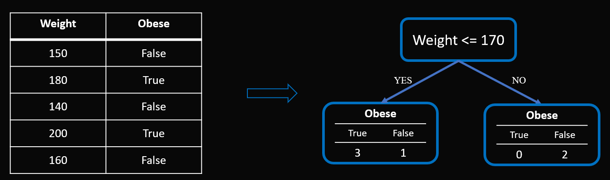
There are two split algorithms that are primarily used:
1. Entropy & Information Gain:
- Entropy defines the level of uncertainity in a node. More uncertainity is recorded when more variance is observed in the data.
- Entropy values range between 0 to 1, with 0 being the best (lowest uncertainity) and 1 being the worst. Information gain is the opposite of Entropy that captures the amount of information gained after the split.
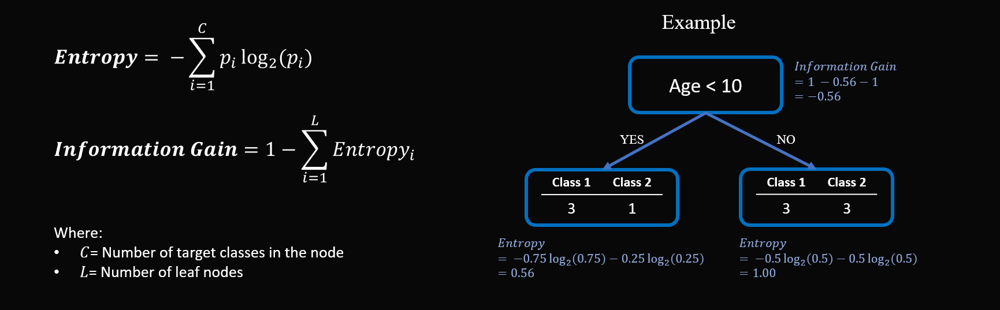
2. Gini Index:
- Gini value, like Entropy, defines the level of uncertainity in a node. More uncertainity is recorded when more variance is observed in the data.
- Gini value in the leaf node ranges between 0 to 0.5, with 0 being the best (lowest uncertainity) and 0.5 being the worst.
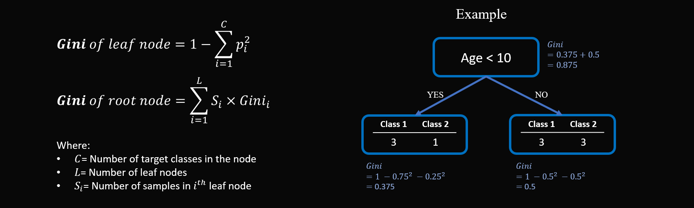
Having analyzed the LDA results, we've identified the key themes discussed in each review. Now, our focus shifts to understanding the underlying sentiment or emotion associated with these themes. This crucial step requires the development of a classification model capable of accurately discerning the sentiment expressed in each review.
To achieve this, we've leveraged customers' star ratings in conjunction with their corresponding reviews as the foundational elements for our classification task. Our objective is clear: we aim to construct a robust classification model that effectively predicts the sentiment conveyed within each review, distinguishing between positive and negative sentiments..
Data Preparation
In order to train Decision Tree algorithms, labeled data is essential. Hence, a new label column called "Sentiment" has been generated. The values in the "Sentiment" column are determined by the star ratings provided. Ratings higher than 3 have been categorized as "Positive," while the remaining ratings are labeled as "Negative."
Python is utilized to build the Decision Tree algorithm, which exclusively accepts data that are partitioned into two disjoint sets: training and test sets. Hence, the dataset has been split at a ratio of 77% to 33%. They need to be disjoint to avoid information from the test set unintentionally influences the training process, which may lead to overfitting and inflates the performance metric.
Download the data here
Find the data preparation code here
Experiment Setup & Results
Three Decision Tree Classifiers were built for classification and they yielded the following results:
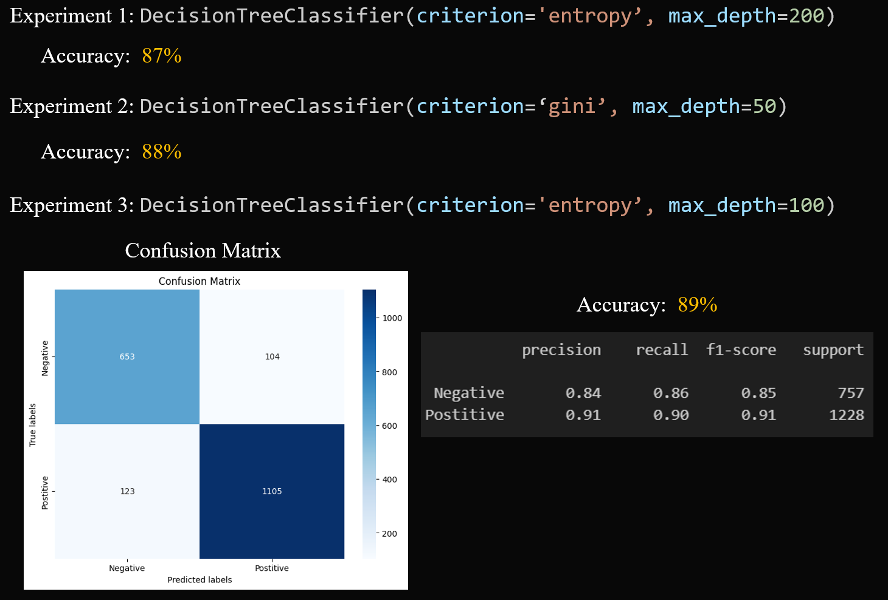
Decision Tree with entropy criterion and a depth of 100 reduced overfitting and yielded the best result.

Find the code here
Conclusion
While the Decision Tree achieves a high accuracy of 88%, it prioritizes words that are not directly linked to sentiments simply because splitting the tree based on those words yields high information gain (for example, 'customer'). Consequently, although the model accurately predicts labels, there's a significant chance it may not accurately predict sentiment for complex reviews.
Support Vector Machine Classification
Support Vector Machine (SVM) is a supervised learning algorithm used for classification tasks. In SVM, all data, including categorical data, is represented as quantitative vectors, with each row serving as a vector. It is important to convert the data into quantitative vectors for SVM's reliance on numerical features for the computation optimal decision boundary.
The vectors located on the boundary of the separable margins are termed support vectors. Each SVM model is designed to classify between two categories, such as 0 vs 1. SVM is particularly useful for linearly separable data, where it can effectively create a boundary between classes. However, in cases where data is not linearly separable, SVM employs kernel functions to add extra dimensions to the data, making it linearly separable.
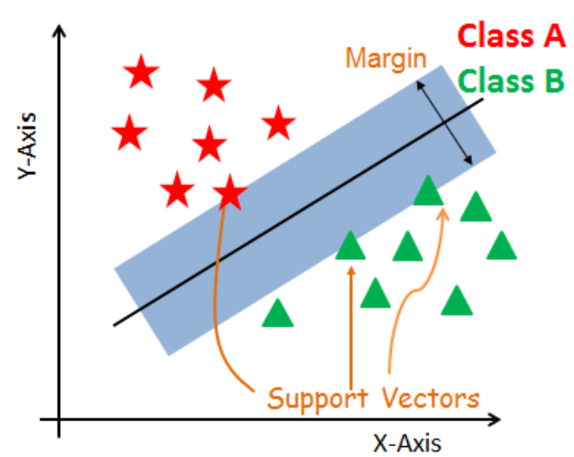
Having analyzed the LDA results, we've identified the key themes discussed in each review. Now, our focus shifts to understanding the underlying sentiment or emotion associated with these themes. This crucial step requires the development of a classification model capable of accurately discerning the sentiment expressed in each review.
To achieve this, we've leveraged customers' star ratings in conjunction with their corresponding reviews as the foundational elements for our classification task.SVM is especially powerful for high-dimensional data, making it well-suited for text data. Hence, SVM is used in this section to construct a classification model that effectively predicts the sentiment conveyed within each review, distinguishing between positive and negative sentiments.
Data Preparation
In order to train SVM algorithms, labeled data is essential. Hence, a new label column called "Sentiment" has been generated. The values in the "Sentiment" column are determined by the star ratings provided. Ratings higher than 3 have been categorized as "Positive," while the remaining ratings are labeled as "Negative."
Python is utilized to build the SVM algorithm, which exclusively accepts data that are partitioned into two disjoint sets: training and test sets. Hence, the dataset has been split at a ratio of 77% to 33%. They need to be disjoint to avoid information from the test set unintentionally influences the training process, which may lead to overfitting and inflates the performance metric.
Download the data here
Find the data preparation code here
Experiment Setup & Results
Three combinations of SVM kernel and cost parameter were used for classification and they yielded the following results:
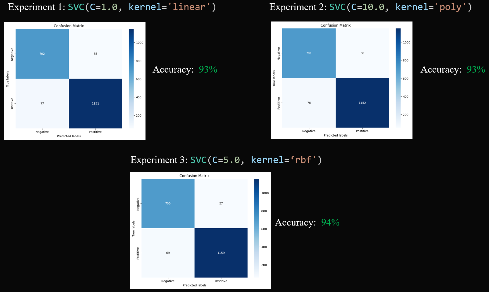
All three combinations yeilded moreover the same result. The top positive and negative coefficients is displayed below. This visualization aids in understanding the importance of each feature (word) in the SVM model's decision-making process.
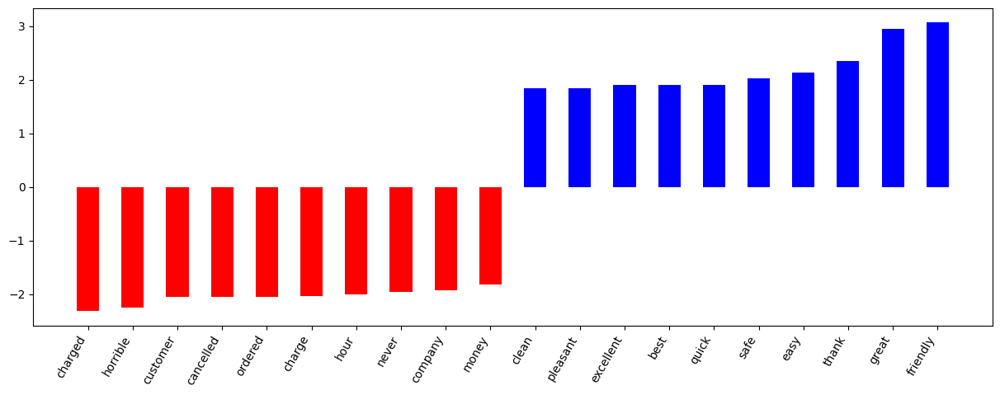
Find the code here
Conclusion
In comparison to the Naive Bayes and Decision Tree algorithms, the Support Vector Machine has demonstrated superior performance in accurately classifying sentiments. As a result, this SVM model stands out as a robust tool for detecting the sentiment of future reviews with precision.
Neural Netowrk
Neural networks are computer systems inspired by the human brain. Like the neurons that fire and connect, artificial neural networks use interconnected nodes to process information. This allows them to learn and adapt to complex data, making them a powerful tool in machine learning. While traditional machine learning algorithms rely on hand-crafted features, neural networks can discover these features themselves. Additionally, there are many different neural network architectures, each suited for specific tasks. For this project, I have utilized a simple Artificial Neural Network (ANN) to classify sentiments.
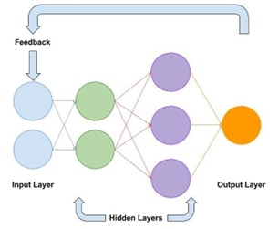
Having analyzed the LDA results, we've identified the key themes discussed in each review. Now, our focus shifts to understanding the underlying sentiment or emotion associated with these themes. This crucial step requires the development of a classification model capable of accurately discerning the sentiment expressed in each review.
To achieve this, we've leveraged customers' star ratings in conjunction with their corresponding reviews as the foundational elements for our classification task.SVM is especially powerful for high-dimensional data, making it well-suited for text data. Hence, Neural Network is used in this section to construct a classification model that effectively predicts the sentiment conveyed within each review, distinguishing between positive and negative sentiments.
Data Preparation
In order to train the NN algorithms, labeled data is essential. Hence, a new label column called "Sentiment" has been generated. The values in the "Sentiment" column are determined by the star ratings provided. Ratings higher than 3 have been categorized as "Positive," while the remaining ratings are labeled as "Negative."
Python is utilized to build the NN algorithm, which exclusively accepts data that are partitioned into two disjoint sets: training and test sets. Hence, the dataset has been split at a ratio of 77% to 33%. They need to be disjoint to avoid information from the test set unintentionally influences the training process, which may lead to overfitting and inflates the performance metric.
Finally, the taget variable was converted to numerical values since NN expects a numerical response variable.
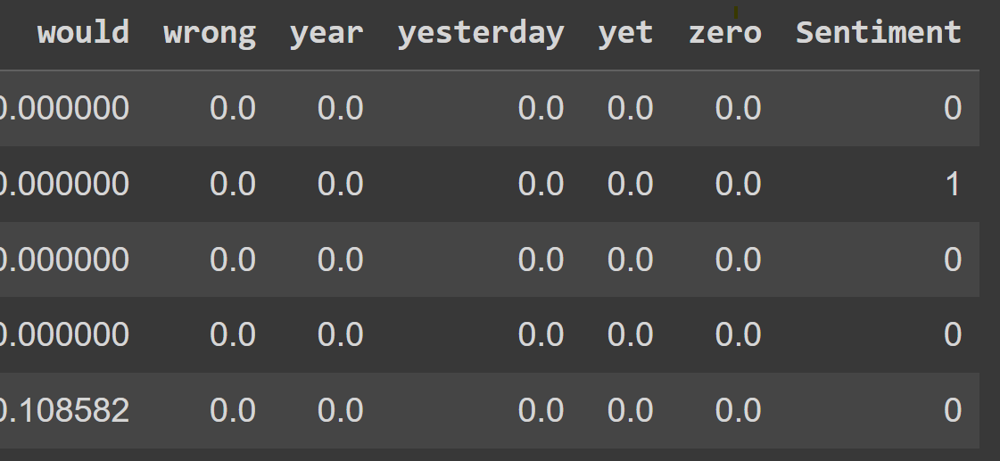
Download the data here
Find the data preparation code here
Experiment Setup & Results
A simple Neural Netowrk with three layers were built, where the first 2 layers were built using relu actiation function and the last layer with sigmoid function. The model was trained for 100 epochs, however the model converged at around 10 epochs:

The neural network algorithm was tested with a test data and it yeiled an accuracy of 91%.

Find the code here
Conclusion
Neural Network has yeilded a strong 91% in classifying the sentiments. From observation, it was found out that Uber has been praised by its customers for its Quality and Services with major sentiments as positive, however there were a lot of concerns around Uber driver's behavior with mostly negative reviews.
Conclusion
This project developed a framework for monitoring a company's brand perception. This framework was applied to analyze Uber, a leading transportation service through the public opinions shared on Trustpilot. The framework allows companies to track customer sentiment and tailor strategies to improve their market standing.
Global Reach and Local Voice
Uber operates in over 100 countries. Customers from various regions, including the United States, Canada, the United Kingdom, India, and Australia, shared their experiences on Trustpilot. The analysis focused on four key areas of customer feedback:
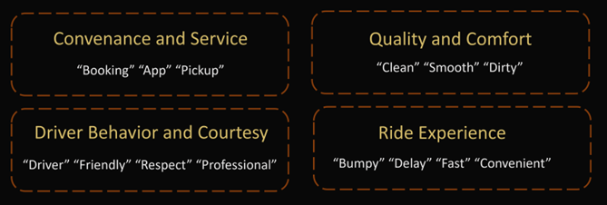
- Convenience and Service: Customers used words like "booking," "app," and "pickup" to describe how easy it is to hail a ride through the Uber app.
- Quality and Comfort: Terms like "clean," "smooth," and "dirty" reflected customer experiences with the vehicles themselves.
- Driver Behavior: Feedback included words like "driver," "friendly," "respectful," and "professional" regarding driver interactions.
- Ride Experience: Customers used words like "bumpy," "delay," "fast," and "convenient" to describe their overall journey.
Mixed Bag of Reviews
The analysis revealed a mix of positive and negative sentiments across all categories. Customers shared both compliments and complaints.
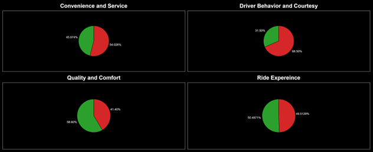
- Convenience and Service, Ride Experience: These categories received a balanced mix of positive and negative reviews
- Quality and Comfort: This category received the most positive feedback, suggesting that cleanliness and comfort are strengths for Uber.
- Driver Behavior: This category had the most negative feedback, indicating a need for improvement in driver courtesy and professionalism.
Trends and Insights
The data showed a positive trend in customer perception of quality and comfort over the past three years. This suggests that Uber is delivering well in these areas. However, driver behavior reviews took a dip in late 2022. While there's a recent upward trend in positive reviews, it's important to address this concern.
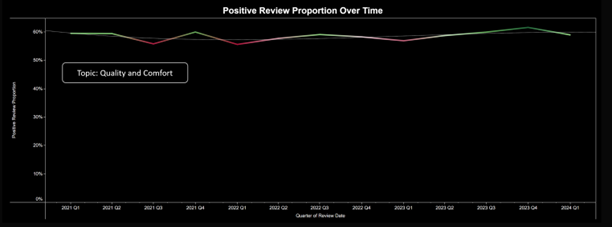
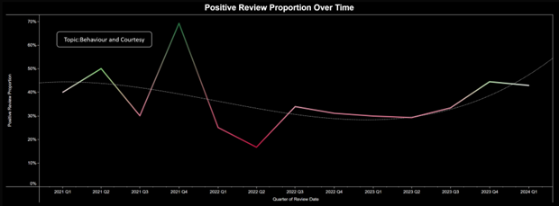
Geographic Nuances
The analysis also revealed geographic variations in sentiment. Customers in India expressed more positive sentiment, likely due to their perception of good ride quality. In contrast, Australian customers leaned towards negative feedback, possibly linked to driver behaviour issues.
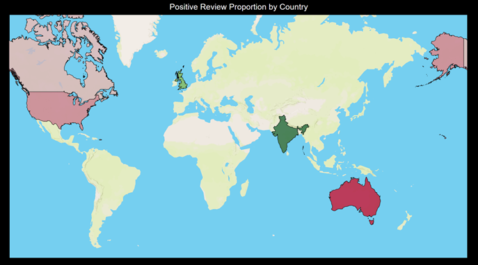
Recommendations for Improvement
- Investigate Driver Concerns: A thorough investigation into the reasons behind negative driver behavior reviews in Australia and similar markets is recommended.
- Take Action: Based on the investigation, Uber should implement targeted solutions, such as driver training programs or stricter monitoring mechanisms, to address these concerns and improve customer experience.
Further Exploration
For a more in-depth analysis, an interactive dashboard can be explored here